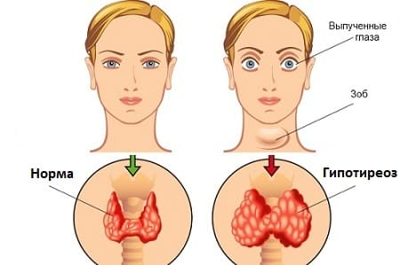

Щитовидная железа расположена в передней части шеи и вырабатывает (секретирует) гормоны, которые помогают регулировать наш метаболизм. При снижении способности щитовидной железы к секреции гормонов развивается гипотиреоз. У детей так же, как и у взрослых, возможно развитие противоположного состояния — гипертиреоза.
ПРИЧИНЫ
Самый распространенный вид гипотиреоза — аутоиммунный тиреоидит Хашимото — чаще всего встречается у взрослых. Тем не менее он может наблюдаться и у детей и подростков. Считается, что это заболевание развивается вследствие того, что собственная иммунная система организма атакует щитовидную железу. Как и почему это происходит, точно неизвестно, тем не менее считается, что вирусные заболевания имеют отношение к развитию аутоиммунного тиреоидита Хашимото. Когда это происходит, щитовидная железа начинает вырабатывать меньше гормонов. Другими менее распространенными причинами гипотиреоза у взрослых и детей являются:
Существует врожденное заболевание, называемое врожденный гипотиреоз. Оно встречается у одного ребенка из 4000. К счастью, в большинстве штатов в наше время диагностика врожденного гипотиреоза проводится как скрининг у всех новорожденных. |
СИМПТОМЫ
К симптомам относятся:
У пациента может наблюдаться несколько из этих симптомов или все сразу.

ЛЕЧЕНИЕ
Если ваш врач подозревает гипотиреоз, он назначит анализы крови для определения уровня тиреоидных гормонов в вашем организме. Если установлено, что у пациента гипотиреоз, то, как правило, единственное, что нужно для его коррекции, — ежедневный прием гормона щитовидной железы в таблетках. Скорее всего, сначала врач назначит небольшую дозу и медленно будет увеличивать ее, пока не достигнет адекватной коррекции. Такой заместительный прием тиреоидных гормонов необходим пациенту в течение всей жизни.
Здоровье ребенка от докторов Сирс / Сирс У. и др.